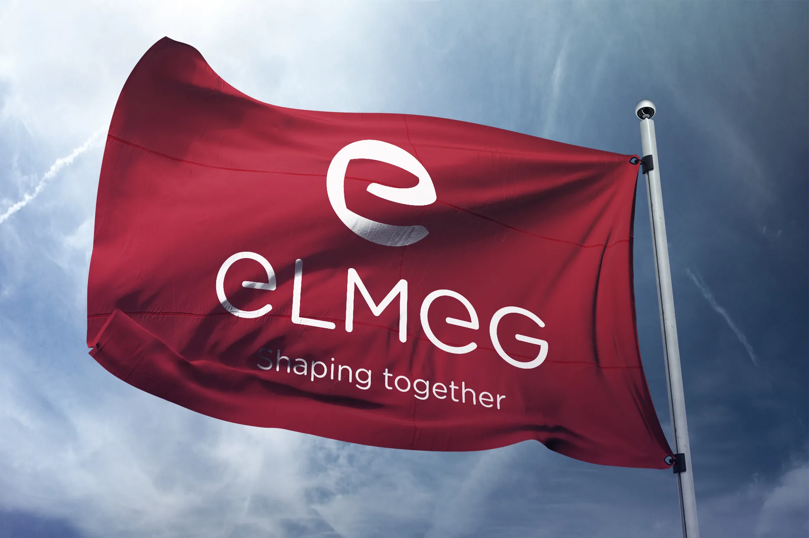
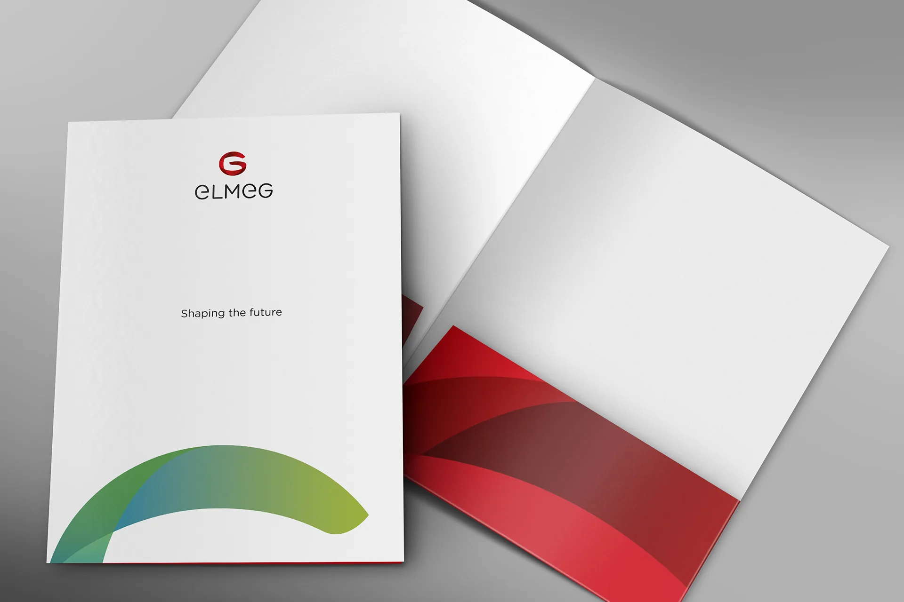
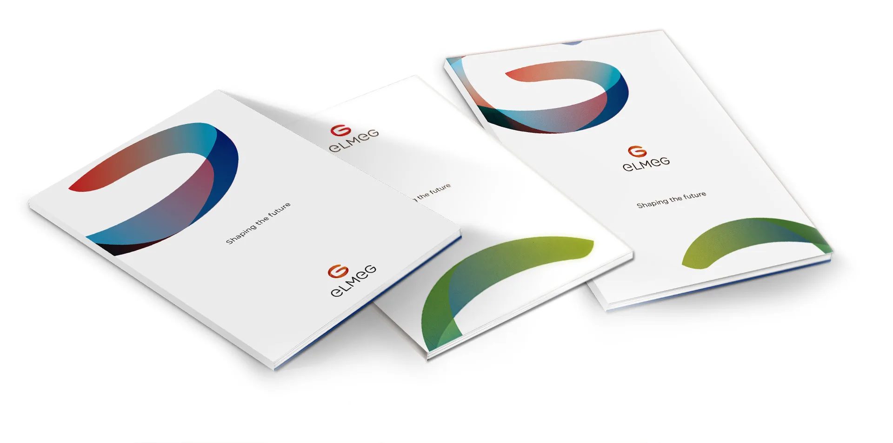
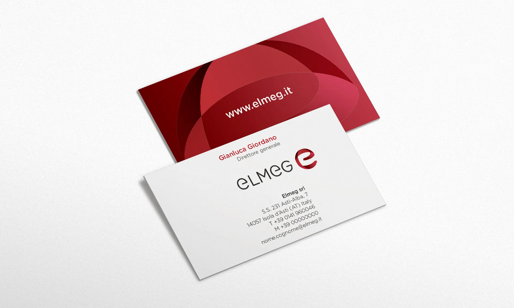
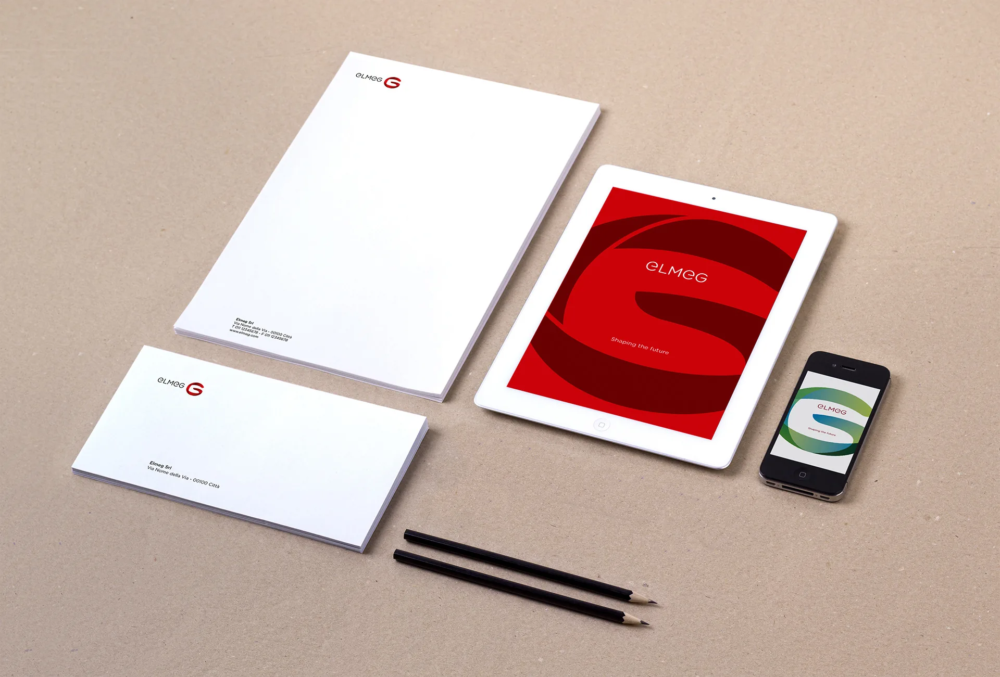
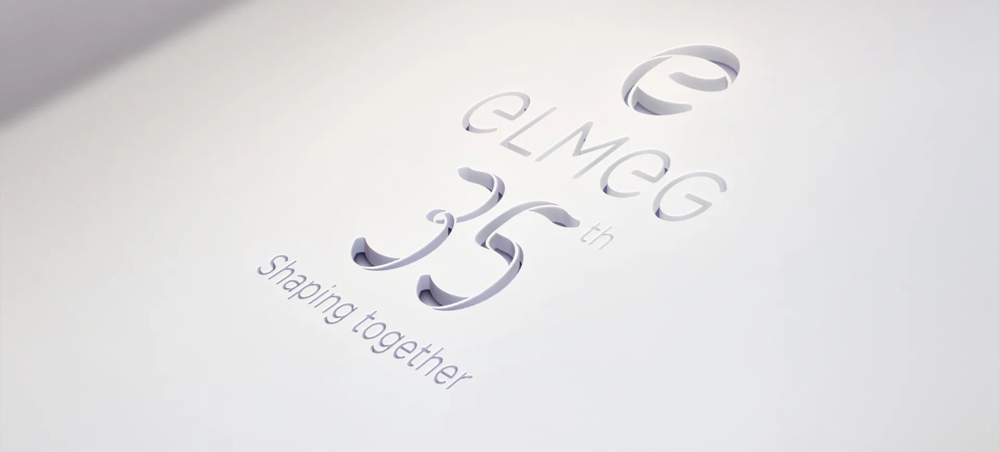
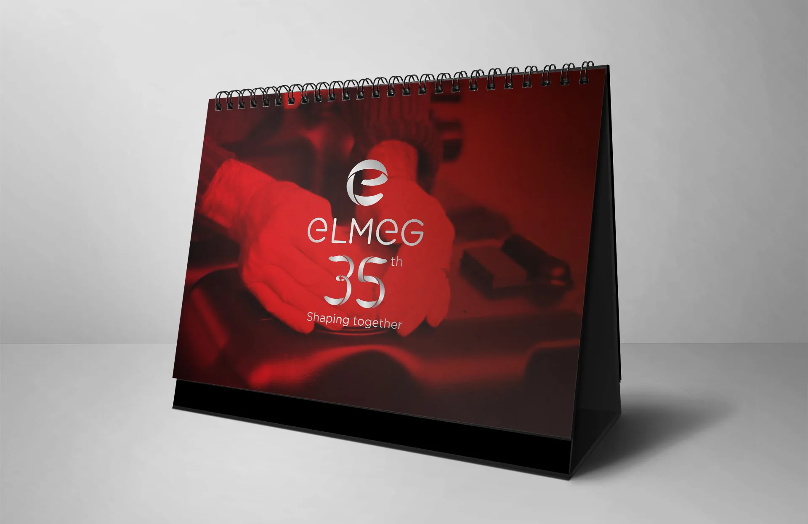
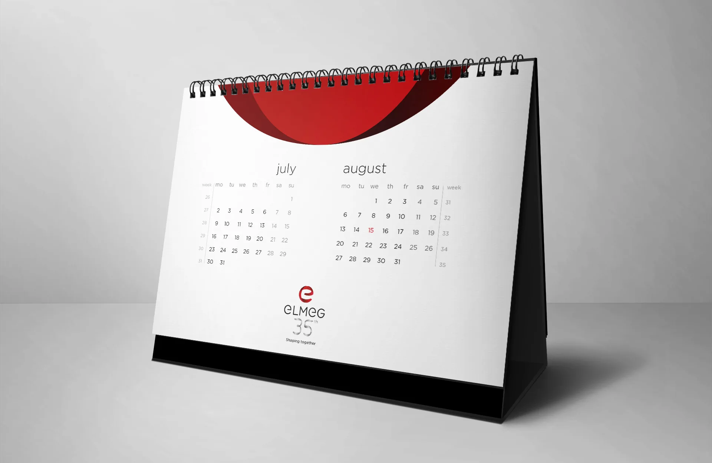
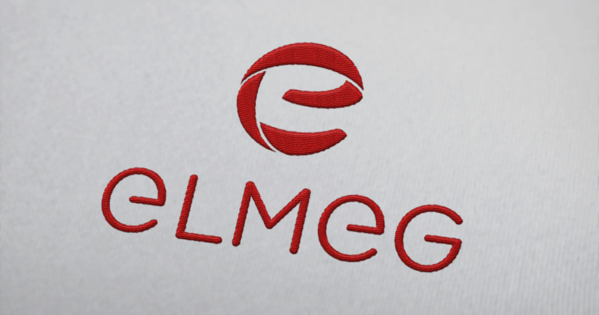
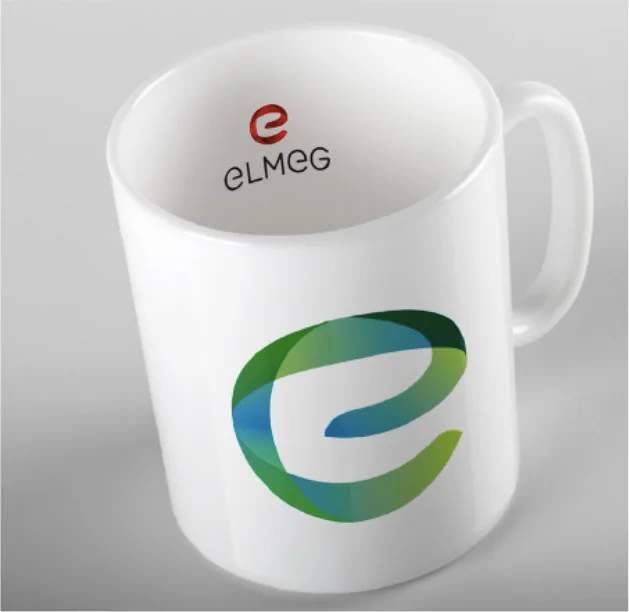

Aziende
Elmeg
Shaping together
Shaping together è un modo di lavorare prima che un claim: Elmeg dà forma ai componenti insieme a chi li ha commissionati.
Si parte dall’ascolto, segue la condivisione, poi l’affinamento. La competenza e la cura si vedono nel risultato, la fiducia tiene insieme tutto, l’impegno chiude il cerchio.
Sei parole, un solo gesto: due parti che si incontrano e danno forma, insieme.









